Transportation Along the Boardwalk
With today’s bustle of rollerblades, strollers, bikes of all kinds and sizes, skateboards, old-style skates, and who knows what other people conveying contraptions imaginable, the Ocean Front Walk is one of the prime spots for tourists to come feel the unique atmosphere of the beach scene here in Venice. For almost 100 years, this stretch of the strand has been home to various forms of public transportation to help escort patrons to and fro along its scenic vistas. Following is a visual overview of some of those rolling devices.
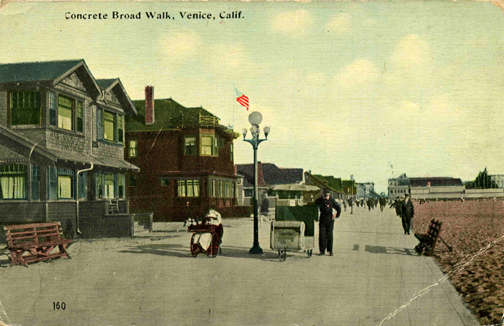
In the early days of Venice, one of the most unique means of conveyance was the roller chair. This 1910 postal card looks south among the private residences along the Ocean Front Walk with the Kinney Pier in the right background.
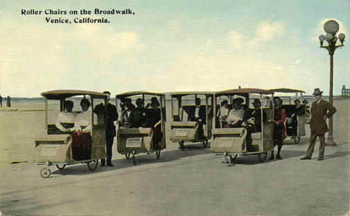
Roller chairs were first introduced in 1884 at Atlantic City, New Jersey. They were popular at the 1904 St. Louis World’s Fair, with added enjoyment along the sweeping Pacific vistas evident here in Venice.
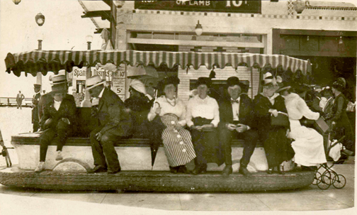
Riding along the beach front on an electric tram was both an easy way of seeing the sights, and a way of making a fashion statement at the same time. Notice the mother doing double-duty with her stroller on the right.
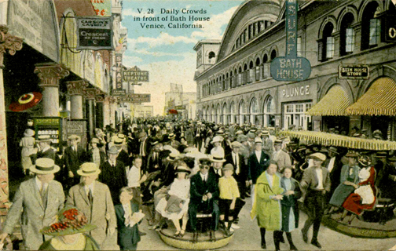
The Venice electric trams were operated by uniformed motormen on the concrete boardwalk between Santa Monica and Venice. These trackless electric trams amounted to battery powered upholstered wicker benches with a lever-type hand controller and a mechanical brake at one end.
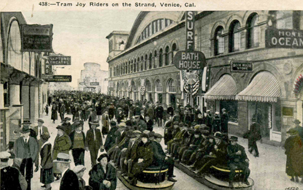
The same view as the previous postcard, looking south at Horizon Avenue with the Plunge bathhouse on the right and today’s Sidewalk Cafe location on the left. The electric trams began operating in 1916.
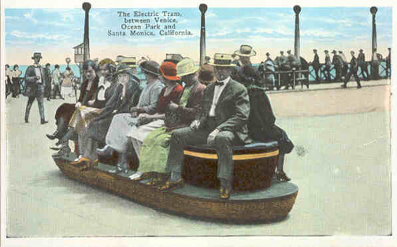
Trams furnished fast, frequent transportation along Ocean Front Walk between Windward Ave. and Pier Ave., and connected with other trams from Pier Ave. to the Santa Monica Pier. This is the rear view of a tram passing the Ocean Park Pier. The fare then was only 5 cents.
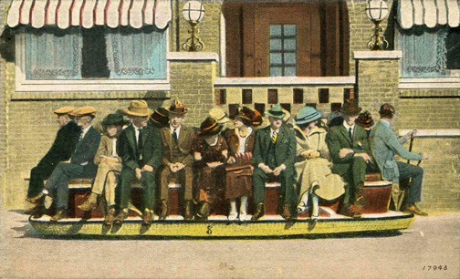
Electric trams first started in 1881 in Berlin, as some of these riders probably knew first hand. Come on, cheer up. You’re at the beach, for cryin out loud!
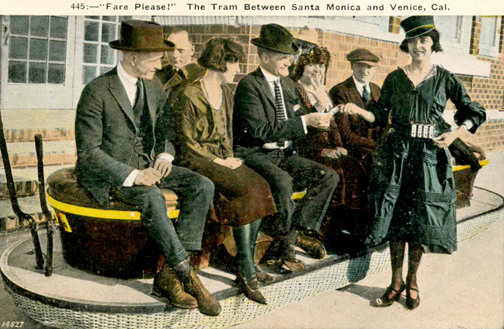
Here we see Tony Kinney, then head of the Kinney Company in the 1920s, paying the “Motormanette,” a real novelty at the time, his 10¢ fare, in front of today’s Gingerbread Court at 517 Ocean Front Walk.
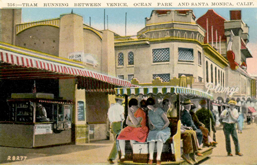
This tram is headed south towards the Ocean Park Bathhouse at Navy Street in the 1930s. The trams were often raced and chased by barefooted boys who sometimes tried to hook rides, hanging onto the back of the tram, of which we can’t quite see in this shot.
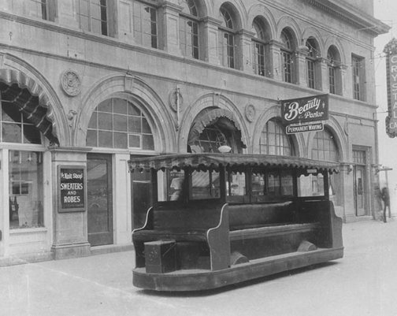
During the twenties, there were battery powered trams, but during the 1930s they were replaced by larger, awning-covered side-seating trams powered by four-cylinder Chevrolet engines, similar in design to the Ford Model A engines. This one sits outside the Plunge between Market and Horizon.
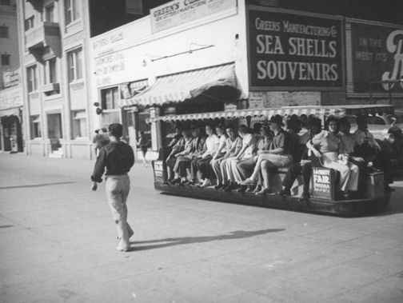
As time progressed, so did the fashions of their riders. We can tell that the beach attire is loosening a little, from this photo from the 40s looking north towards the Potter Apartment building, now the Venice Suites location, and the Hotel Waldorf at Westminster Avenue.
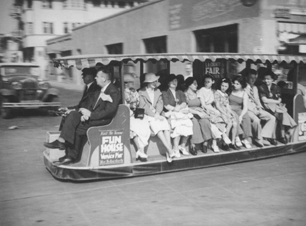
On days of passenger overload, the trams, which were garaged at Brooks Ave. and Speedway, were supplemented by two vans, named "La Paloma," or the dove, and "La Golondrina," the wanderer. I personally dig the guy riding shotgun.
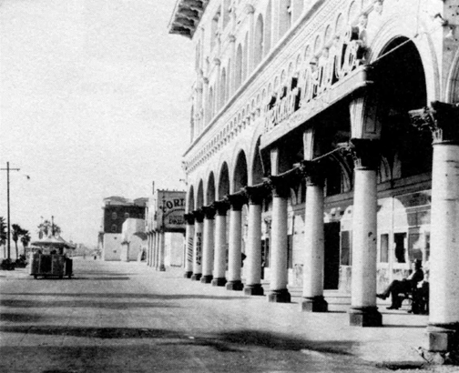
The 1950s found Venice practically turning into a ghost town. This photo of the St. Marks Hotel on the right at Windward Avenue also shows the old Fortune Bridgo parlor, before it became the fabled Gas House beatnik hangout.
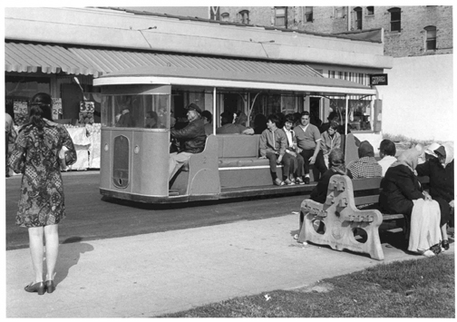
You can easily identify the time-frame of this beefed-up tram shot, not by the denizens on the bench at the right, but by the audience on the left. Late 60s, I’d say, as she watches a tram cruise northward past Rose Avenue in front of today’s popular ‘On the Waterfront’ establishment.
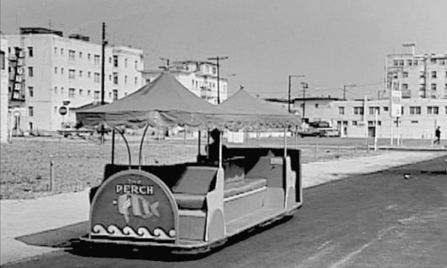
Compare this post-1962 “urban renewal” photo with the earlier joy-riding boys card from the 30s, taken in the same spot at Navy Street. It’s evident why the tram service collapsed in the early 1970s - no riders. Just a few years later, the Ocean Front Walk would regain its popularity, due to the opening of the bikepath in 1972 and the renewed interest caused by the outdoor rollerskating craze. Today, on busy weekends, there probably wouldn’t be room enough for a solar-powered tram to operate along the boardwalk, but I for one, would enjoy kicking-back and taking a ride up and down the ocean front, enjoying all the amenities of our hometown of Venice.
|